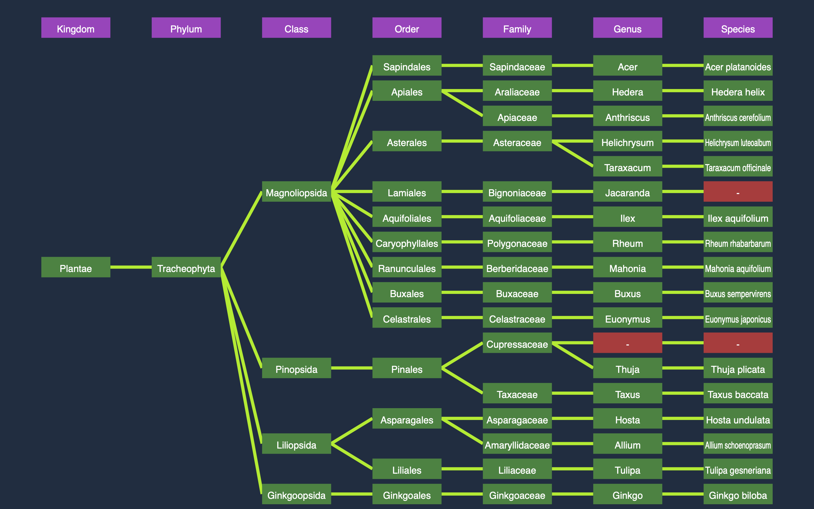

Portfolio
Here is a summary of my projects, achievements and successes throughout my life. My most commonly used programming languages are Python and Java, but I have experimented with others as well. These articles will contain short summaries of my projects, as well as any relevant links and resources, if applicable.
PlantIdentifier 🌱
Information on this project can be found directly on its preview, accessible here on this website The project comes from a previous project I made, published on my GitHub, titled PlantIdentifier After I helped some fellow classmates I decided I could make it publically accessible, for which reason I remade it in JavaScript to make it faster, independent and runnable anywhere from just this website.
Preview:
Point-Direction-Detection
A very simple python script I made some time ago. It uses the front camera to track your hands, specifically your index fingers. It then calculates which direction each finger is pointing in and displays the vectors for the 2d rotation, relative to the 2d viewport. The program also displays a helpful overlay over the video, with a line extending the direction of your index finger. This project can be used in various situations and could be a convenience for many developers. The GitHub link to this project is here.
This program makes use of Mediapipe's pretrained models to identify hand positions and motions, as well as OpenCV to obtain video data.
Preview: